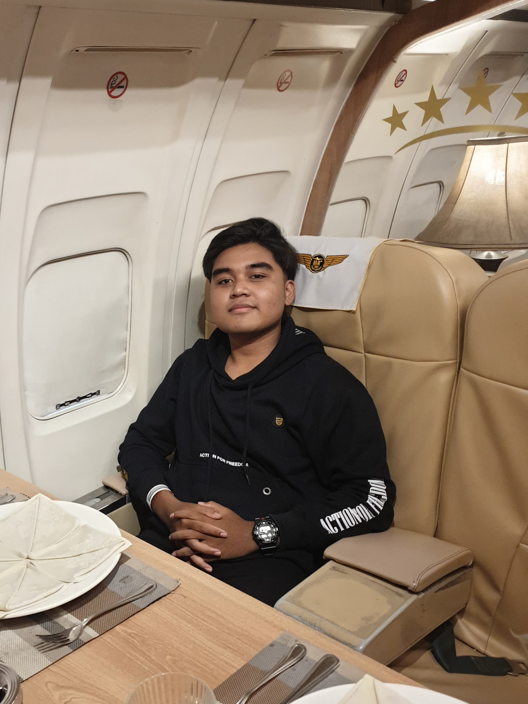
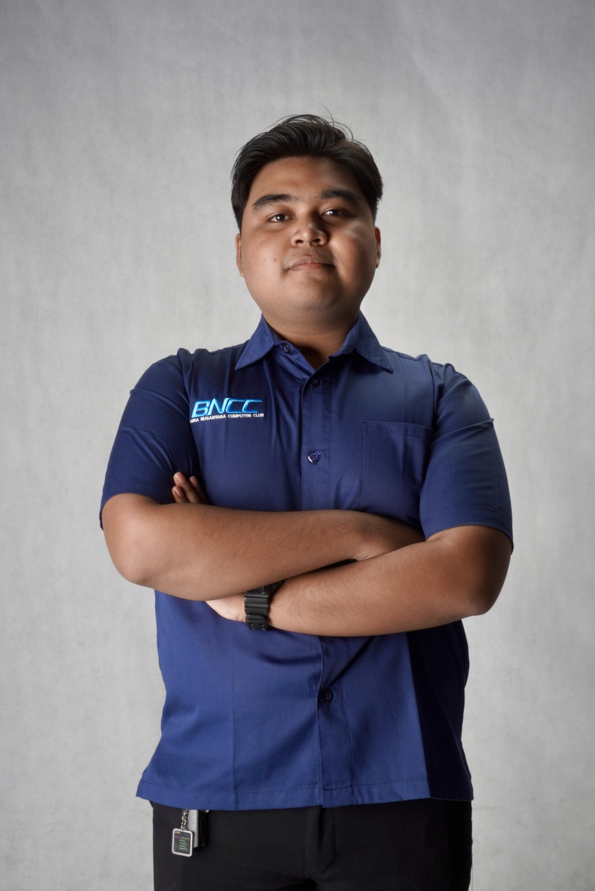
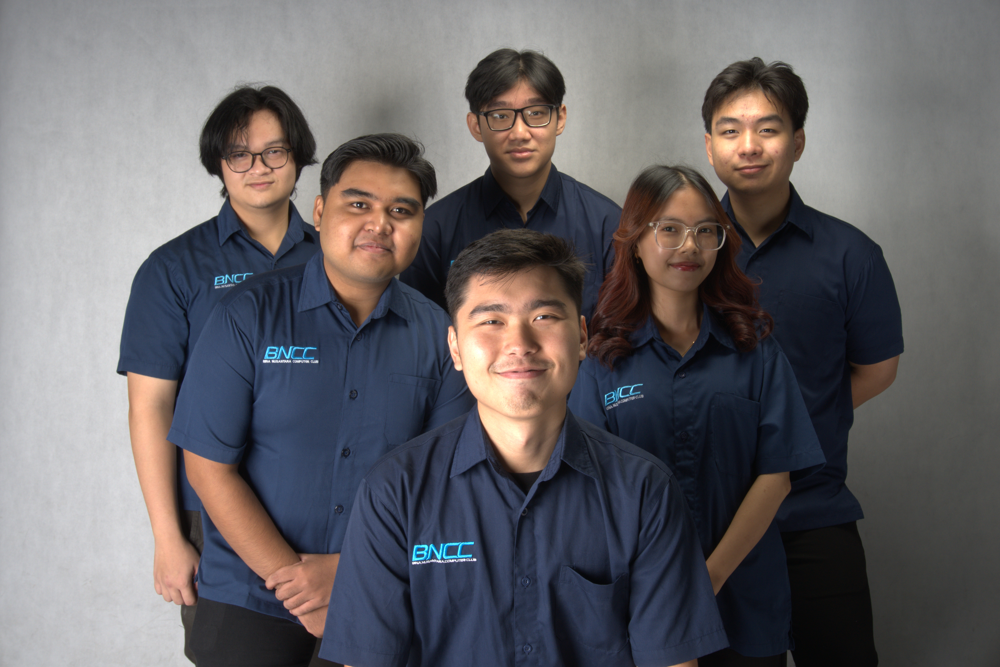
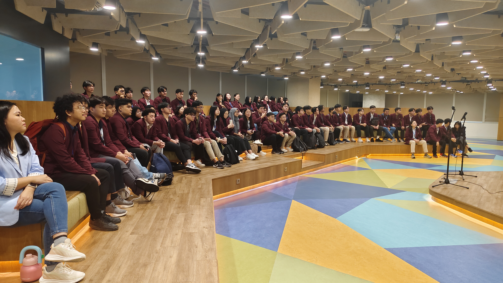
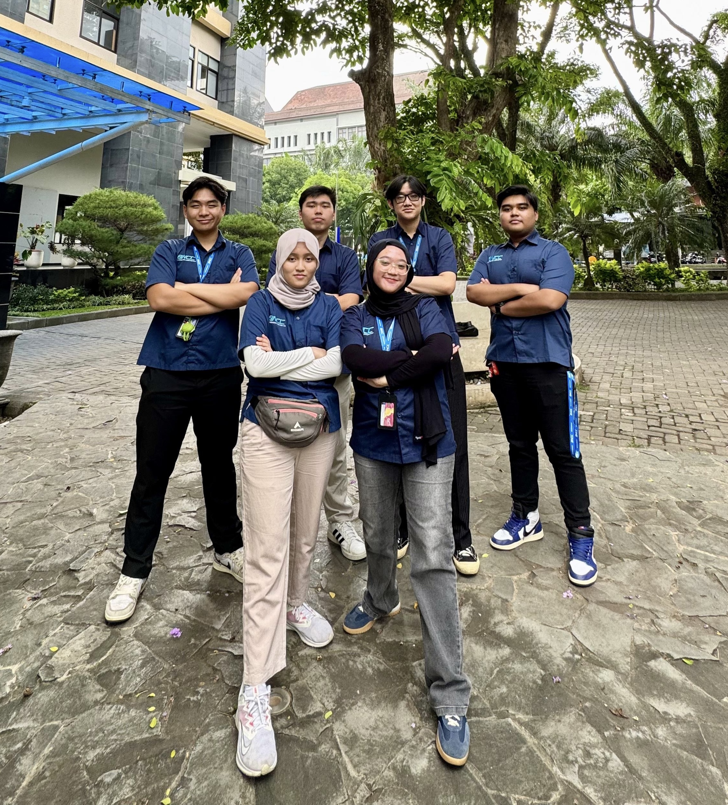
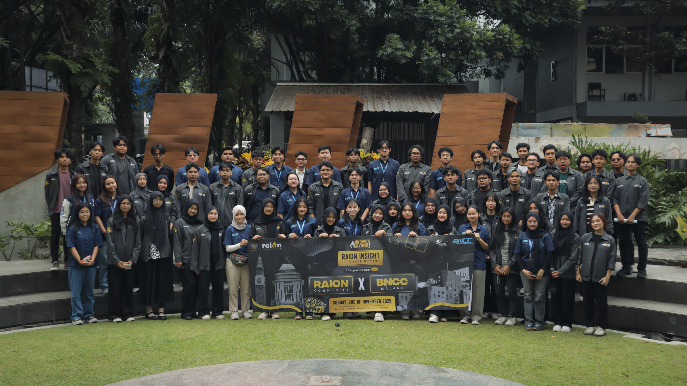
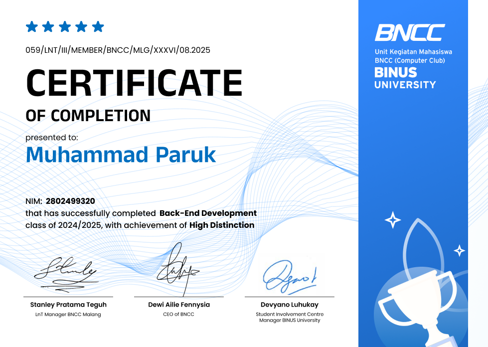
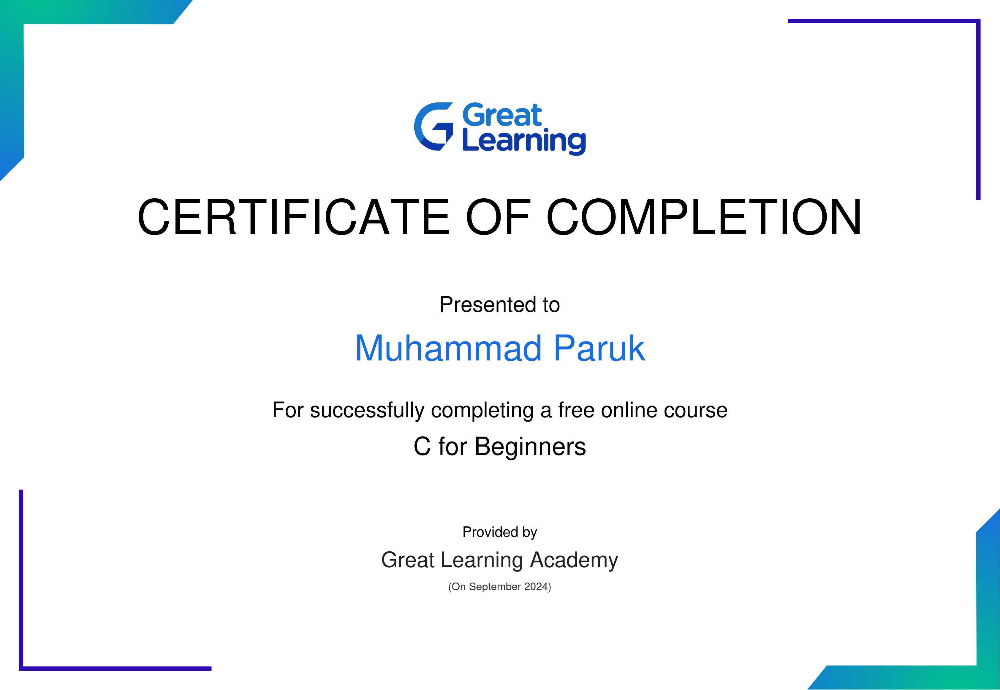
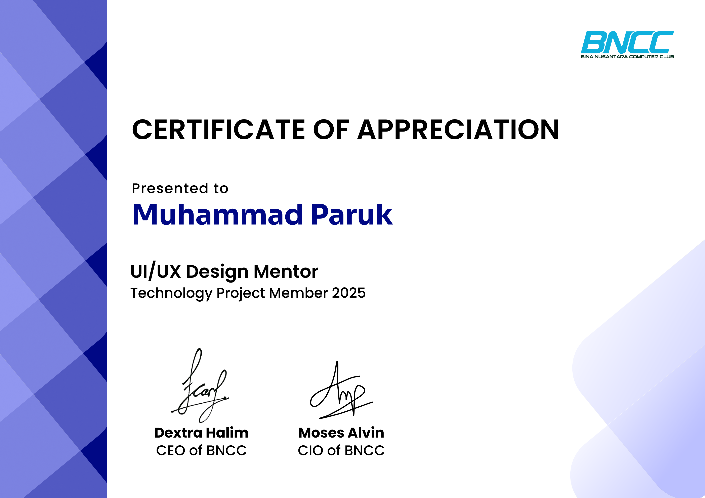

01 / WEB
DinoVerse Web
A dinosaur-themed frontend with concise learning content and a basic connection to a Unity app through barcode scanning.
View repositoryI build thoughtful digital solutions with a focus on backend development, clean systems, and solving practical problems.
Backend development
PHP · Laravel · MySQL

I’m a Computer Science student at BINUS University preparing for internship opportunities. I enjoy learning how software works behind the scenes and turning ideas into useful applications.
Help organize LnT classes as part of BNCC’s Learning and Training division, while continuing to develop teamwork and time management skills.
Learned to support organizational activities, including helping organize LnT classes under the committee’s guidance. Developed teamwork, time management, leadership, and other soft skills.
Worked on a backend project with members from UI/UX and Frontend. Focused on backend development using PHP and Laravel.
Completed a one-year LnT Backend class, learning PHP and Laravel. Created two projects as part of the class: a midterm project and a final project.
A dinosaur-themed frontend with concise learning content and a basic connection to a Unity app through barcode scanning.
View repositoryA Laravel shop backend with role-based access, product management, cart and checkout, stock updates, order history, and profile management.
View repositoryRecommends restaurants in and around Malang using location, distance, ratings, and review counts with K-Nearest Neighbors.
View repositoryA work-in-progress project. I’m involved as a backend developer collaborator.
View repositoryMy time with BNCC’s Learning and Training division has helped me learn through classes, projects, and organizing together.
From learning backend development to helping organize LnT classes, each experience has given me a chance to grow with the people around me.





High Distinction

Back-End Course

Certificate

Mentor Certificate

ISFEST 2025 · Certificate of Appreciation
Open certificateTechnoday 2025
Open certificate